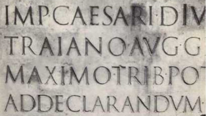

인쇄 이전
오늘날 미국과 서유럽에서 사용하는 알파벳은 서기 1세기경의 로만 명각 글자꼴에서 유래했다.
인쇄술 발명 이전에는 필사본을 통해 책과 문서를 복사했는데, 타이포그래피는 주로 서예와 관련되어 있었다. 로마인들은 그리스 알파벳을 차용하여 로만
캐피털(사각형 대문자)을 사용했고, 4세기경부터는 쓰기 편리성을 위해 둥근 형태의 언셜체, 반언셜체 등의 필기체가 등장했다. 9세기 샤를마뉴 황제 시절에는 제국 전역의
필사체 기준이 마련되었으며, 5-12세기 수도원 시대에는 교회가 필사본 제작을 독점했다. 12세기 이후로는 대학 설립, 종이 발명 등으로 세속 필사가 활성화되었고, 샤를마뉴
제국 권력 약화로 지역 글씨체인 고딕체, 블랙레터체 등이 유행했다. 마침내 15세기 종이 보급으로 인쇄술이 발달하며 활자체 디자인이 시작되었다.

트라야누스기둥의 ‘캐피탈리스 모뉴멘탈리스’서체
기계 세대
19세기는 변화와 개발의 시대였다. 18세기에 행해졌던 많은 발명과 발견이 실생활에 사용되기 시작했고, 1800년에 이르러 영국과
네덜란드의 농업은 점점 상업화되어 효율성을 추구하게 되었다.
기계시대의 서체는 인쇄술의 발전과 밀접한 관련이 있다. 15세기 구텐베르크의 활자 인쇄술 발명 이후, 책과 문서의 대량 생산이 가능해졌다.
이에 따라 문자의 형태와 배열에 대한 새로운 접근이 필요했다.
19세기 산업혁명 시기에 이르러 서체는 획기적인 진화를 겪게 된다. 기계화된 인쇄 공정이 도입되면서 다양한 서체와 스타일이 등장했다. 특히 새로운 활자 주조 기술로
인해 더욱 정교하고 섬세한 서체 디자인이 가능해졌다.
20세기 초반에는 모더니즘 운동의 영향으로 간결하고 기능적인 서체 스타일이 유행했다. 바우하우스 디자인 스쿨에서는 단순하면서도 가독성이 뛰어난 서체를 강조했다. 이
시기에 디자인된 서체들은 현대 서체에도 많은 영향을 미쳤다.
초기 모더니즘
20세기가 되자 정치적, 사회적, 문화적으로 여러 가지 대립된 의견과 혁명이 일어나기 시작했다. 19세기 후반에는 반자본주의자,
반식민주의자, 반학문적 운동이 생겨났다. 식민지 통치를 받던 다수의 국가가 독립을 주장했고, 많은 창조적인 예술가들은 기존의 전통적인 틀에서 벗어나게 되었다.
19세기 타이포그래피의 독창성 추구는 산세리프체의 출현을 이끌었고, 20세기 들어 사진 식자술의 발달로 활자 활용의 자유가 증가했다. 모더니즘
운동에 따라 아방가르드 예술가들이 실험적인 타이포그래피를 선보였다. 바우하우스는 혁신적인 디자인 교육을 시도했고, 얀 치홀트는 '신 타이포그래피'를 정립했다. 파울 레너의
푸투라체는 기하학적 산세리프체의 대표작이 되었다. 스탠리 모리슨이 디자인한 타임스 뉴 로만체는 신문에 적합한 권위 있는 서체로 자리잡았다. 20세기 미국에서는 가우디,
로저스, 드위긴스 등 활자 디자이너들이 활약했고, 에릭 길은 고전과 현대를 아우르는 퍼페추아체와 길 산스체를 탄생시켰다.
포스트 모던
합리성과 획일성에 대한 반발로 탈이성적이고 다원적인 사고를 바탕으로 예술과 디자인에서 독창성과 다양성을 추구한 시기였다.
20세기 후반 포스트모더니즘 사조가 일어나면서 합리성과 획일성에 반기를 들고 새로운 디자인 경향이 나타났다. 스위스의 오더매트와 티시, 영국의
네빌 브로디, 독일의 볼프강 바인가르트 등이 기존 규범을 탈피한 실험적 타이포그래피를 선보였다. 개인용 컴퓨터와 디지털 기술의 발달로 타이포그래피에 더 많은 자유가
부여되었고, 어도비사의 포스트스크립트, 트루타입, 오픈타입 등 새로운 폰트 기술이 등장했다. 헤르만 차프는 오픈타입을 활용해 손으로 그린 캘리그래피 스타일의 차피노체를
성공적으로 디지털화할 수 있었다. 포스트모던 타이포그래피는 전통적 규범에서 벗어나 개성 있고 다양한 표현이 가능해졌다.

최초의 매킨토시, 개인용 컴퓨터의 보급